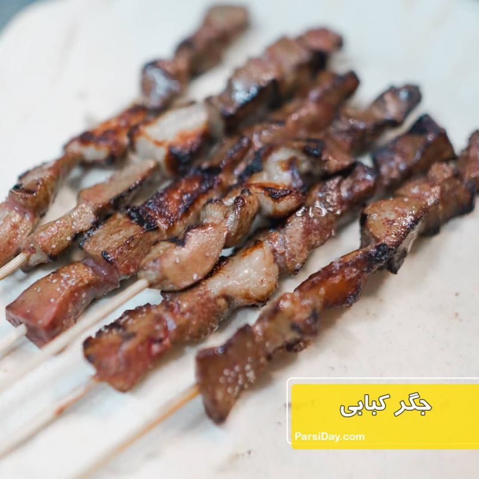

jigar

akbarjooje

Hello! My name is Amirhossein Parsaei. I am a Petroleum Engineering student and I also own and manage an addiction treatment clinic. I am interested in web development, programming, and artificial intelligence. I am originally from Gorgan and I am a big fan of Jigar and Akbar Joojeh. I am currently learning front-end development and I hope to become a professional web developer in the future.

| food | calories | Protein | fat |
|---|---|---|---|
| jigar | 250 kcal | 30 g | 12 g |
| akbarjooje | 600 kcal | 45 g | 35 g |
| pasta | 500 kcal | 18 g | 15 g |